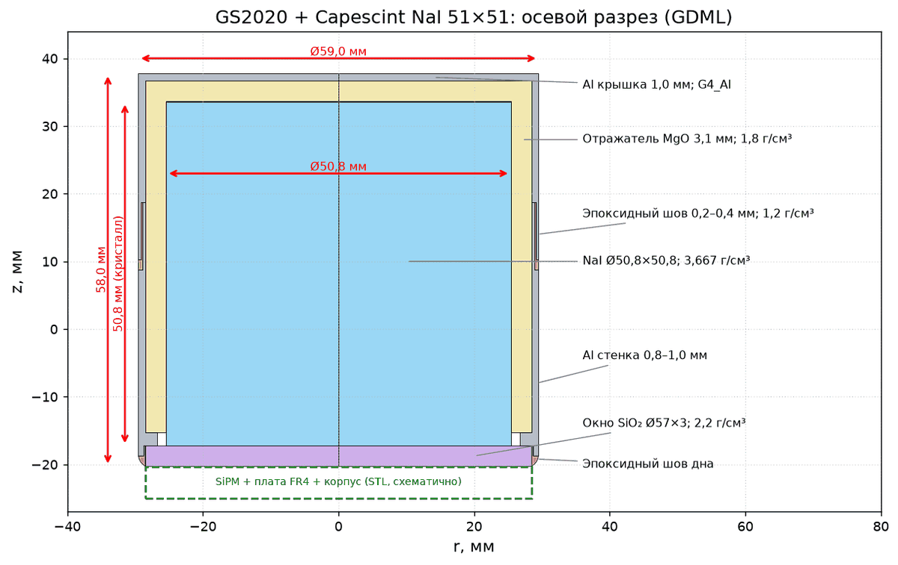
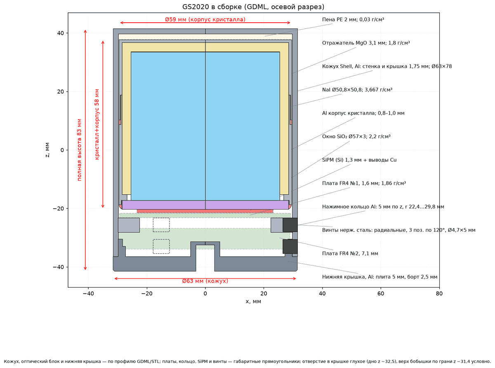
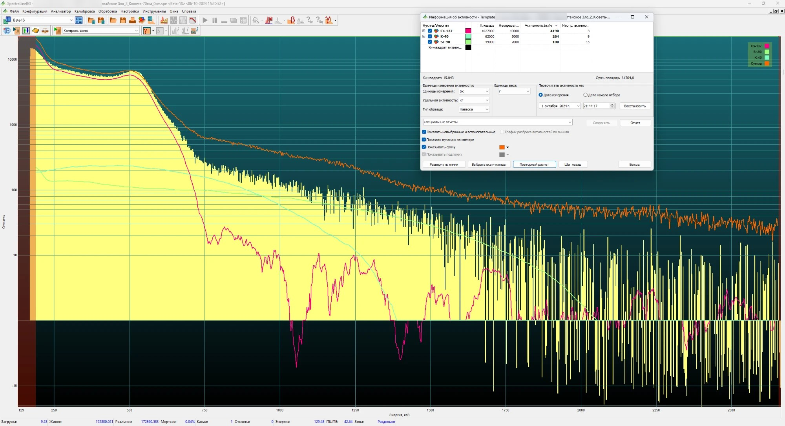

scintillation gamma-ray spectrometer · NaI(Tl) Ø51×51 · SiPM · Geant4 model
Atom GS2020 PRO MAX — instrument, model, and spectra
This working page describes the instrument: the spectrometer and its Geant4 model, followed by measured spectra and their decomposition. It reports three spectra measured in a Marinelli beaker of nominal volume 1 L: a Th-232 reference sample, a potassium chloride (K-40) sample, and a dried blueberry sample (Cs-137 and K-40, as well as the β emitters Sr-90 and Y-90; the first sample with unknown activity). The Ra-226 spectrum will be added later.
This page was prepared with the assistance of a large language model-based assistant (Claude, Anthropic) — roles, responsibilities, and data sources are detailed in the sections “About this page and its numbers” and “Sources” at the bottom of the page.
Spectrometer
Atom GS2020 PRO MAX — a scintillation gamma-ray spectrometer with a NaI(Tl) 2×2 inch (Ø50.8×50.8 mm) crystal. Scintillation light is read out not by a photomultiplier tube (PMT), but by a silicon photomultiplier (SiPM) array at the crystal end face; the amplifier, ADC, and thermal stabilization are housed in the same Ø63 mm aluminum housing, with USB Type-C connectivity. The instrument is assembled by Gammaspectacular (Australia); on the manufacturer's website it is listed as GS-MAX-2020-NAI-SIPM.
Crystal. The manufacturer of the crystal itself is unknown. According to the instrument manufacturer, the crystal characteristics are very close to those of the Capescint NaI-51×51 assembly; the latter is adopted in the model — based on the 3D model and drawing of the assembly manufacturer.


| parameter | per instrument manufacturer data | in the Geant4 model of this page |
|---|---|---|
| crystal | NaI(Tl) 2×2″, hermetically sealed in a capsule | NaI(Tl) Ø50.8×50.8 mm in the Capescint assembly: capsule (1 mm Al cup), reflector, Ø57×3 mm quartz window — seven solids following the profile of the assembly manufacturer |
| photodetector | SiPM | SiPM arrays and boards — per the instrument STEP drawing; scintillation-light transport is not modeled; the energy deposited in the crystal is scored |
| housing | 1.6 mm aluminum, Ø63×82 mm | per the instrument STEP drawing: 41 parts (housing, lid, rings, boards, fasteners); housing height in the model 83 mm (82 mm according to the datasheet) |
| mass | 550 g | — |
| relative energy resolution (at the 662 keV line) | less than 7.5 % (datasheet; CsI(Tl) variant — less than 7.0 %) | from the SpectraLine “Peak Parameters” table for the thorium reference spectrum: FWHM (full width at half maximum) 24.07 keV at 238 keV, 40.62 at 583, 57.35 at 911, 107.42 at 2614; in the model convolution the same values are multiplied by 1.05, with log–log interpolation between the points (the power law FWHM(E) = 0.788·E0.6335 keV is their approximation) |
| channels | up to 8192 | — |
| thermal stabilization | built-in sensor, from −40 to +50 °C | not modeled |
| software | BecqMoni Atom, Impulse, Atom-Spectra (Android) | — |
Model geometry
The housing and internals of the instrument were imported from the STEP drawing of the assembly (Blender → tessellated GDML solids); the crystal assembly is defined by exact solids of revolution per the manufacturer's profile. In the model, the instrument is oriented with the crystal facing up. Hereafter, “capsule” is the aluminum cup containing the crystal (Ø59 mm), and “housing” is the outer shell of the instrument (Ø63 mm). The geometry is validated not only by visualization but also by radiation transport calculations (K-40 volume source, one million events): no stuck tracks caused by geometry errors were recorded, and the 1460.8 keV peak is observed at the expected energy. Minor overlaps (up to 0.4 mm) between the volumes of drawing parts and the unverified density of the crystal-assembly reflector remain; they are model assumptions.
GDML files for the general case:
instrument model (without sample) and
instrument with a 1 L Marinelli beaker, filled with water (sample volume — LV_SourceMatrix:
for your own sample, replace the material and density). Assemblies with specific samples are on the spectrum tabs; all files are in the
model repository.
There are two Marinelli beakers, both of the supplier's “1 L Marinelli beaker” type with a screw-on lid (supplier: dimensions Ø145×110 mm, internal opening Ø83×55 mm). Marinelli 1 is the beaker with the thorium reference sample (well diameter 82 mm). Marinelli 2 is the beaker for water, KCl, and blueberries: well diameter 79 mm, conical beaker body, plastic walls 3 mm thick; its cross-section with dimensions is shown in the drawing on the right.





Spectra
Each spectrum was measured in a Marinelli beaker of nominal volume 1 L and has its own energy calibration and its own Geant4 model of the beaker and sample (volume, density, composition). Thorium was measured in Marinelli 1 (well diameter 82 mm); water, KCl, and blueberries were measured in Marinelli 2 (well diameter 79 mm). Spectrum selection:
Abbreviations. MC — Monte Carlo method (MC template — full decay spectrum of a nuclide in the sample geometry, calculated by this method); FEP — full-energy peak; “FEP efficiency function” — the detection efficiency εFEP in the full-energy peak as a function of energy; “response” — the energy-deposition spectrum in the detector from a monoenergetic photon (full-energy peak, Compton continuum, escape peaks); FWHM — full width at half maximum; RMS — root-mean-square deviation; ν — number of degrees of freedom in χ²/ν (the number of channels in the fit window minus the number of fitted amplitudes; both methods use the same window); IB — internal bremsstrahlung; KUB — Knipp–Uhlenbeck–Bloch theory of internal bremsstrahlung; NPSM — model of the scintillation light-yield non-proportionality; LSRM — developer of the SpectraLine software (lsrm.ru); LNHB-DDEP — radionuclide decay database of the Henri Becquerel National Laboratory (France); ENSDF — Evaluated Nuclear Structure Data File. The term “sample” refers to the measured samples (KCl, blueberries); “reference sample” refers to the thorium calibration sample; “reference lines” — lines with known energy, used to verify the energy scale.
spectrum 1 · Th-232 · Marinelli 1 beaker (nominal volume 1 L)
Decomposition of the thorium-232 spectrum
Reference sample of known thorium-232 activity in the Marinelli 1 beaker (nominal volume 1 L); activity concentration 910 Bq/kg (relative uncertainty 6.0 %), mass 1052 g — total activity 957 Bq ± 57 Bq. The same two fitting methods as on the page of the Gamma-1S spectrometer of the same project: the fitting code is borrowed from Gamma-1S, the transport model is Geant4, and the geometry is our own. Method 1 — least-squares fit of the full spectrum using calculated MC spectra of the full decay of chain members. Method 2 — full-energy-peak (FEP) efficiency function × line library: the FEP efficiency function is the detection efficiency in the full-energy peak obtained from Geant4 responses to monoenergetic γ rays in the sample geometry; the response to each line (full-energy peak, Compton continuum, escape peaks) is weighted by its emission probability. One of two line libraries is used: the Gamma-1S library of 62 lines (Method 2) or the library of all known ENSDF lines (IAEA Live Chart database) without an emission-probability threshold, comprising 342 lines (Method 2-2); the library is selected by a toggle. Additionally, 57 sum peaks (true coincidence summing of cascade γ rays) are accounted for. In the convolution, the FWHM is specified by its values at 6 reference points of the SpectraLine “Peak Parameters” table (multiplied by 1.05) with log–log interpolation; the power law FWHM(E) = 0.788·E0.6335 keV is an approximation of these values.
Low-energy region (below 150 keV). In this region, the model and the measurement disagree: below about 60 keV the model is lower than the measurement, and in the 60–150 keV region it is higher. The cause of the discrepancy has not been established; non-proportionality of the NaI(Tl) light yield and residual unaccounted attenuation of the external background by the sample are being considered. A discrepancy below 150 keV is also observed for the KCl sample, but with a different energy dependence (tab “K-40 (KCl)”); the energy scale below 238 keV has not been verified. The fit window starts at 150 keV, so the effect on the activity is small.
Geometry and background. The liquid with the reference sample fills the beaker to a level 1 cm below the rim. Method 1, with subtraction of the background measured with water, yields an activity close to the known value (the exact ratio is given in the “Method 1” tab below). The background, measured in Marinelli 2 with distilled water and multiplied by the r(E) correction for the attenuation of the external background by the sample, is subtracted. This beaker has a re-entrant well of Ø79 mm, whereas Marinelli 1 with thorium has a well of Ø82 mm; the live time of this measurement is shorter than that of the laboratory background recorded without the beaker; the background has its own energy calibration, based on five reference lines of this background. The thorium reference sample attenuates the external background more strongly than water, most strongly at 35–70 keV (according to the Geant4 calculation of r(E): a minimum of 0.47 at 40 keV, r → 1 by 200 keV; the composition of the reference sample is not given in the export). The detection efficiency of the model was verified separately by measuring KCl, whose K-40 activity is known from the sample mass (tab “K-40 (KCl)”).
Fit of the full spectrum with a single template of the Th-232 decay chain in secular equilibrium: the sum of MC response templates for the full decay of eight chain members (each member — a separate Geant4 calculation for its nuclide, Tl-208 with the Bi-212 branching ratio) and the measured background, scaled to live time and not fitted. A single amplitude is fitted for the entire decay chain. The shaded areas show the contribution of each chain member to the model at the fitted activity.
The component outline is solid where the MC response template of the chain member contains at least 4 counts per channel, and dashed where it contains fewer: below the threshold, the fraction of the chain member in the channel is determined by template noise and is not considered a measured fraction. The fraction of the component contribution lying below the threshold is shown in the tooltip when hovering over the component in the legend.
For each γ-ray line in the library, the detector response function to a monoenergetic photon of that energy is taken (full-energy peak, Compton continuum, escape peaks), obtained by direct Geant4 calculation for a volume source in the same beaker at the energy of the line itself; it is multiplied by the emission probability of the line. The sum of responses weighted by emission probabilities is fitted to the entire spectrum with a single decay-chain amplitude, as in Method 1. 57 sum peaks (true coincidence summing of cascade γ rays) are accounted for separately. Characteristic K and L X-rays of all chain members are included in both libraries as separate entries; the lines themselves lie below the fit window (which starts at 150 keV), and only the “X-ray + γ” sum peaks fall within the window. The library is selected by a toggle: the Gamma-1S library of 62 lines (Iγ ≥ 2 %) or the ENSDF library of 342 lines, obtained via the API of the IAEA Live Chart of Nuclides database — all known γ-ray lines of the chain members in the fit window without an emission-probability threshold (Method 2-2); a dedicated Geant4 grid node is calculated for each line.
The Method 2 model includes external bremsstrahlung of the β particles of each β-emitting chain member (a separate component in the plot); internal bremsstrahlung (IB) is not included in the calculation until its contribution is confirmed by a measurement or a verified formula. The Method 2 model does not include true coincidence summing of cascades, except for the listed sum peaks, and, for the main library, lines with emission probabilities below the threshold; possibly for this reason, for a unit activity, it yields a lower response than the Method 1 model, and the fit overestimates the activity.
Intrinsic detector lines. After photoabsorption in the crystal, iodine K X-rays (28.5 and 32.3 keV) can escape the crystal, and the event is registered below the full-energy peak for that energy — an iodine X-ray escape peak. Such peaks are not entered into the line library: they are generated in the Geant4 response of each line. The fractions below are calculated from grid responses (energy deposition before broadening, background subtracted using side windows).
Reference-sample and background spectra. The background is scaled to the live time of the reference sample and multiplied by the r(E) correction for attenuation of the external background by the reference sample; the difference is the reference-sample count minus the scaled background in each channel. The energy scale is the polynomial from the instrument file with a piecewise-linear correction based on the centroids of its peak table. Reference lines are the γ-ray lines of the Th-232 decay chain.
Energy resolution calibration
Line widths in the convolution are taken from the SpectraLine “Peak Parameters” table for this spectrum and multiplied by 1.05 (the multiplier is chosen by minimizing the peak shape residuals); between the points, log–log interpolation is used, and the K-40 background line is not included in the convolution. For comparison, the table lists the width measured in this spectrum using the SpectraVibe width estimator (shown only where the three measurement methods agree within 5 %), and the BecqMoni width calibration from the spectrum file (a power law in channels, converted to keV using the same scale). The power law FWHM(E) = k·Ep is an approximation of the FWHM values used in the convolution (RMS deviation 2.5 %); at 662 keV it yields 48.2 keV.
Estimates on a common scale. The width of the colored band is the stated uncertainty; the relative spread is shown below the scale.
With the reference sample filled to 1 cm below the beaker rim, Method 1, with subtraction of the background measured with water, is closest to the known activity and provides the best peak shape agreement. Method 2 with the Gamma-1S library yields an activity markedly higher than the known value, while Method 2-2 (all ENSDF lines) is closer to it (the ratios are given in the table above). The Method 2 model includes external bremsstrahlung of β particles, but internal bremsstrahlung (IB) is not included in the calculation; there is no true coincidence summing of cascades, except for the listed sum peaks, and with the main library, lines with emission probabilities below the threshold are also excluded. Possibly for this reason, per unit activity, the Method 2 model yields a lower response than the Method 1 model, and the fit compensates for this. The detection efficiency in the model was verified separately for K-40 (the “K-40 (KCl)” tab above).
spectrum 2 · K-40 · KCl in the Marinelli 2 beaker (volume 1 L)
Model efficiency verification for K-40
Potassium chloride sample, “pure” grade (Russian designation “ch.”): mass 1085 g, volume in the beaker 1000 mL (bulk density 1.085 g/cm³); the same instrument; the beaker is Marinelli 2 (assembly geometry: GDML). The K-40 activity is known from the mass, without certification: mass × potassium fraction in KCl (0.52445) × specific activity of natural potassium (31.524 Bq/g K) = 17 938 Bq. Live time of the measurement 88.3 h; the same Marinelli + water background as for thorium is subtracted, with an r(E) correction for the attenuation of the background by the KCl sample. The Monte Carlo template is a Geant4 calculation of the full decay of K-40 in a sample of the specified KCl volume and density. The energy scale is specific to this spectrum and determined from peak positions: the expected peaks of this spectrum are fitted with Geant4 responses (the instrument file contains no calibration).
Method 1 (full-spectrum fit with the same convolution kernel as for thorium) gave 17 518 ± 8 Bq (here ± is the statistical uncertainty; the summaries, tables, and the “comparison” tab give the uncertainty multiplied by the Birge ratio correction) — 0.9766 of the expected value; χ²/ν = 9.848, peak shape at 1460.8 keV — χ²/ν = 2.65; a comparison variant with the tail component of the Gamma-1S model convolution kernel gives 0.9806 of the expected value. Method 2 (FEP efficiency function × line library: a single 1460.8 keV line with an emission probability of 10.34 % according to LNHB-DDEP 2025, multiplied by the direct calculation of the Geant4 response to a monoenergetic γ ray in this sample, plus external bremsstrahlung of β particles with the same amplitude; internal bremsstrahlung is not included in the calculation) gave 17 497 ± 7 Bq (± is the statistical uncertainty) — 0.9754 of the expected value, χ²/ν = 10.99. The results of both methods are consistent with each other; their common deviation from the expected activity is possibly due to the model (instrument, beaker, sample); its cause has not been established. The K-40 γ emission probability is adopted from LNHB-DDEP 2025 (10.34 %); in ENSDF and in the Geant4 decay data it is 10.66 %, and with it both methods would yield approximately 3 % less. The decay template of Method 1 contains the 10.66 % emission probability, therefore the Method 1 activity is recalculated by a factor of 10.66/10.34; in Method 2 the LNHB emission probability is specified in the library itself. The moisture content of the sample is unknown; the expected activity is given for dry KCl, and moisture lowers it.
Low-energy region. Without the correction, the difference “measurement − Marinelli + water background” for KCl at 35–70 keV is negative. The sample attenuates the external laboratory background more strongly than the water in the background beaker; the r(E) correction for attenuation is calculated in Geant4 (isotropic external field, assembly with the sample relative to the assembly with water; the field spectrum is reconstructed from the water background) and is accounted for: the background on the page and in the fit is multiplied by r(E). After the correction, in the region of about 25–100 keV the model is higher than the measurement, while below 25 keV the difference “measurement − background” is negative. The cause of the discrepancy has not been established; the non-proportionality of the NaI(Tl) light yield, the instrument threshold (neither effect is described in the model), and residual unaccounted attenuation of the external background by the sample are being considered. The fit window starts at 150 keV, where r(E) is close to one.
Fit of the full spectrum with a single Monte Carlo response template for the complete K-40 decay — calculated with Geant4 for a source of K-40 nuclear decays in the KCl sample volume (55 000 000 simulated decays) — and the measured Marinelli + water background, scaled to live time and not fitted. A single amplitude — the K-40 activity; fit window 150–3000 keV. The shaded area shows the contribution of the template to the model at the fitted activity.
The component outline is solid where the Monte Carlo response template contains at least 4 counts per channel, and dashed where it contains fewer: below the threshold, the component fraction in a channel is determined by template noise and is not considered a measured fraction. The fraction of the component contribution lying below the threshold is shown in the tooltip when hovering over the component in the legend.
Method 2 — full-energy-peak (FEP) efficiency function × line: the FEP efficiency function is the detection efficiency in the full-energy peak obtained from Geant4 responses to monoenergetic γ rays in the sample geometry. The emission probability of the K-40 1460.8 keV γ-ray line (10.34 % per decay, LNHB-DDEP 2025) multiplies the detector response function to a monoenergetic photon of this energy (full-energy peak, Compton continuum, escape peaks), obtained by direct Geant4 calculation for a volume source in the same KCl sample (grid nodes: 5). The response weighted by the emission probability is fitted with a single amplitude to the entire spectrum, as in Method 1. K-40 has one γ-ray line and no cascade: the library contains one main line, there are no sum peaks, and no separate “all known lines” variant (as Method 2-2 for thorium) exists.
In the Method 2 model, three components share a common amplitude: the response to the 1460.8 keV γ-ray, external bremsstrahlung of K-40 β particles (its primary decay mode), and Ar K X-rays; internal bremsstrahlung (IB) is not included in the calculation until its contribution is confirmed by a measurement or a verified formula. Ar K X-rays following electron capture (about 3 keV) are included in the library, but their response is zero: they do not reach the crystal from the sample, and direct Geant4 calculations yielded no events.
Intrinsic detector lines. After photoabsorption in the crystal, iodine K X-rays (28.5 and 32.3 keV) can escape the crystal, and the event is registered below the full-energy peak for that energy — an iodine X-ray escape peak. Such peaks are not entered into the line library: they are generated in the Geant4 response of the line. The fractions below are calculated from the grid response (energy deposition before broadening, background subtracted using side windows).
Spectra of the KCl sample and the Marinelli + water background. The background is scaled to the live time of the sample; the difference is the sample count minus the scaled background in each channel. Each spectrum has its own energy scale: the instrument file for KCl contains no calibration, so the scale correction is smooth (a polynomial) based on the positions of the peak groups of this spectrum, which are determined from Geant4 responses. The table shows the polynomial representing the scale (deviation from it up to 0.019 keV). Reference lines are the K-40 line and background lines.
Energy resolution calibration
Peak width is a characteristic of the instrument, not a sample property: it is determined once from the Th-232 reference spectrum of the same instrument and is then applied to all measurements. The points are obtained from the SpectraLine “Peak Parameters” table for the thorium spectrum multiplied by 1.05; between the points, log–log interpolation is used; at 1460.8 keV the width in the convolution is 80.05 keV. This width is used in the convolution of templates for both methods. For verification, the K-40 peak width was also measured in the KCl spectrum itself: 80.87 ± 1.60 keV (SpectraVibe width measurement: the result is accepted only if three measurement methods agree); it is not used in the convolution. For comparison, the table shows the BecqMoni width calibration from the spectrum file, if recorded in the file (power law in channels, converted to keV using the same scale): it is not present in the KCl file. SpectraLine at 1460.8 keV gives 70.96 keV (K-40 background peak in the thorium spectrum). The power law FWHM(E) = 0.788·E0.6335 keV is an approximation of the FWHM values used in the convolution (RMS deviation 2.5 %); at 662 keV it gives 48.2 keV, at 1460.8 keV — 79.68 keV.
Estimates on a common scale: expected from mass, Method 1, Method 2. The width of the colored band is the stated uncertainty (for the methods, statistical uncertainty multiplied by the Birge ratio correction when χ²/ν exceeds one); relative spread is shown below the scale.
The expected activity is calculated from mass, without certification: mass × potassium fraction in KCl × K-40 abundance × ln2/T½. Its uncertainty 0.37 % comprises the uncertainties of the K-40 abundance, the half-life, and the reagent purity tolerance; the uncertainty of the weighing (balance) is unknown and not included. Geant4 does not generate internal bremsstrahlung from β-decay; it is not included in the K-40 calculation (a KUB spectrum-based estimate would reduce the activity by approximately 1 % and is not confirmed by measurement). The γ-ray emission probability of K-40 is adopted from LNHB-DDEP 2025 (10.34 %); in ENSDF it is 10.66 %.
The Marinelli + water background was measured over a live time of 119 423 s. The KCl sample spectrum was measured in two runs (41.5 h and 46.8 h) with a 2.4 h pause; after the pause, the K-40 peak in the second part was located 2.2 keV higher (apparently due to a slight increase in the instrument gain). Therefore, the second part was shifted to the scale of the first part before summation (based on the peak positions in each part); a simple sum would superimpose two peak positions and distort the scale near the threshold.
Reasons for the large χ²/ν value. The fit criterion accounts for the statistical noise of the Geant4 template itself. The noise is accounted for exactly (including template broadening), so the discrepancy between the model and the measurement is visible in the χ²/ν value. The FWHM of the 1460.8 keV peak in the model (80.05 keV) and in the measurement (80.87 ± 1.60 keV) agree within uncertainty, but the K-40 template shape differs — in the model, the full-energy peak is higher than measured, while the 150–600 keV region is lower. A single amplitude cannot describe both parts of the spectrum simultaneously, so the activity depends on the fit weights. The cause of the shape difference has not been established (under consideration: non-proportionality of the NaI(Tl) light yield, backscatter from the surroundings, housing materials). Sample density, composition, and volume apparently do not explain the discrepancy: the template is calculated in the geometry of the KCl sample itself, and these are accounted for (provided that their values are correct; the moisture content of the sample is unknown). The spectrum energy scale is a smooth polynomial: a piecewise-linear scale produced discontinuities in the template shape (245 and 580 keV) and distorted the peak widths in the plot; with a smooth scale, the excess in the 250–650 keV region disappeared, but a shape difference remains in the wings of the 1460.8 keV peak: the measured peak has wider wings than the model (χ²/ν of the peak shape after accounting for gain spread — 2.65). This sample serves as an independent check of the detector data set. The data set includes the efficiency curve and the response matrix (Geant4 calculation), and the peak width (from the thorium reference spectrum), as well as the correction for sample density and volume; the data set and the verification report are available in the repository geant4-detector-models, dataset.
spectrum 3 · Cs-137 + K-40 · dried blueberries in the Marinelli 2 beaker (volume 1 L)
First sample of unknown activity: dried blueberries
Sample of dried blueberries, 482 g, volume 1 L in a Marinelli beaker (fill level −16.5 mm relative to the rim), bulk density 0.482 g/cm³; the same instrument; the beaker is Marinelli 2 (assembly geometry: GDML). Live time of the measurement 20.2 h (9–10 October 2026). The spectrum contains lines of caesium-137 and potassium-40; the continuous component is described by the β template of strontium-90 with yttrium-90. The Marinelli + water background is subtracted, scaled to live time and multiplied by r(E): the density of blueberries is lower than that of water, and the sample attenuates the external background less; the r(E) correction is calculated in Geant4 separately for the background lines (full-energy peaks) and for the continuum. Geant4 templates — in the sample geometry: full decay of Cs-137 (with Ba-137m), K-40, Sr-90 and Y-90. Peak width and shape and efficiency — from the detector data set (thorium reference spectrum), without fitting to the sample; the energy scale is specific to this spectrum and is determined from the positions of its peaks.
Method 1 (full-spectrum fit with the same convolution kernel as for thorium) gave for Cs-137 1981 Bq (4110 Bq/kg); statistical uncertainty ± 1.5 Bq, systematic uncertainty about 4 %; overall χ²/ν = 1.77, peak shape at 661.7 keV — χ²/ν = 3.05; scatter across all fit variants about 2 %. For K-40 Method 1 gave 136 Bq (282 Bq/kg); with background subtraction uncertainty ± 14 Bq, systematic uncertainty ± 30 Bq: this is a small difference between the sample peak and the background peak and depends strongly on the r(E) correction; the K-40 result is therefore preliminary. Reference value from another instrument (Beta-1S, SpectraLine, different sample): on its measurement date 1 October 2024 Cs-137 4190 Bq/kg, K-40 264 Bq/kg; Cs-137, decay-corrected to the date of our measurement (decay over 2.018 years): 3999.6 Bq/kg; the ratios of our values to these are 1.028 and 1.069 (+2.8 % and +6.9 %); the model parameters were not adjusted to the reference value. Method 2 (FEP efficiency function × line library) gave for Cs-137 1983 Bq (4113 Bq/kg), for K-40 137 Bq (283 Bq/kg); relative to the reference +2.8 % (Cs-137) and +7.4 % (K-40), χ²/ν = 1.80. The β activity of Sr-90+Y-90 is a nuisance parameter (a model parameter required to describe the spectrum but not the quantity of interest): the electrons are stopped in the sample, the beaker wall, and the housing, and their bremsstrahlung forms a broad continuous bump in the 150–450 keV region; the activity of Sr-90 is not determined from the γ-ray spectrum and is not published: the β template is fitted only as an auxiliary component.
Compton edge of the 662 keV line (about 477 keV). The Compton edge in the measurement is shifted towards lower energies and is broader than in the model: by 2.5 % for the 662 keV line (for KCl — by 1.75 % for the 1460.8 keV line, edge at about 1243 keV). The cause has not been established; the scintillation light-yield non-proportionality of NaI(Tl) is being considered (the parameters of the non-proportionality model (NPSM) for this crystal have not yet been determined). The residual is about −14 % at 450–550 keV; peak-based activities are practically insensitive to it. Below 150 keV the model is not evaluated: fit window — 150–3000 keV.
Fit of the full spectrum using three Geant4 Monte Carlo response templates — full decay of Cs-137, full decay of K-40, and β-decay of Sr-90+Y-90 (1:1) — and the measured Marinelli + water background, scaled to live time and multiplied by r(E); the background is not fitted. Three amplitudes are fitted; fit window 150–3000 keV, simulated decays in the templates: 100 000 000 for Sr-90+Y-90; 20 000 000 for Cs-137, K-40. The shaded areas show the contribution of each component to the model at the fitted amplitudes; the measurement is the black line, the sum is the dashed line.
The component outline is solid where the Monte Carlo response template contains at least 4 counts per channel, and dashed where it contains fewer: below this threshold, the component fraction in a channel is determined by template noise and is not considered a measured fraction. The fraction of the component contribution lying below the threshold is shown in the tooltip when hovering over the component in the legend.
The component “external bremsstrahlung of Sr-90+Y-90 β particles (Geant4)”: the decay electrons are stopped in the sample, beaker, and housing; its amplitude is a nuisance (auxiliary) fit parameter, and the Sr-90 activity is not derived.
For each line in the library — a γ-ray or an X-ray line — the detector response function to a monoenergetic photon of that energy is taken (full-energy peak, Compton continuum, escape peaks, intrinsic detector lines), obtained by direct Geant4 calculations in the same sample (grid nodes: 14); it is multiplied by the emission probability of the line, and one amplitude per nuclide is fitted. External bremsstrahlung of β particles and conversion electrons of Cs-137 and K-40 (separate components) and the Sr-90+Y-90 β template (nuisance fit parameter) are added; the background is the same as in Method 1 and is not fitted. Fit window 150–3000 keV, number of channels 5996. The library contains 11 lines, including 9 X-ray lines (Ba K X-rays from Cs-137, Ar K X-rays from K-40).
Components: Cs-137 lines, K-40 lines, external bremsstrahlung (β/e⁻) of Cs-137 and K-40 as separate components, Sr-90+Y-90 β, and background. Peak shape in this method: 661.7 keV — χ²/ν = 3.06, 1460.8 keV — χ²/ν = 0.86. Internal bremsstrahlung is not included in the calculation. Ar K X-rays following electron capture (about 3 keV) do not reach the crystal from the sample: the response of these lines is zero.
Line library. Emission probability — per nuclide decay; εFEP — full-energy peak efficiency based on Geant4 responses; “model counts” — the net peak area (counts) that the line yields at the fitted activity.
Estimates on a common scale: Beta-1S (reference value from another instrument), Method 1, and Method 2. The width of the colored band indicates the stated uncertainty (for Method 1 — statistical uncertainty multiplied by the Birge ratio correction when χ²/ν exceeds one). The reference value is provided for comparison; the model parameters were not adjusted to it.
Cs-137
K-40 (preliminary)
Beta-1S — a different instrument and a different sample of the same material (Beta-1S data file, 70 mm dish); SpectraLine on 1 October 2024 gives Cs-137 4190 Bq/kg, decay-corrected to the date of our measurement (decay over 2.018 years): 3999.6 Bq/kg; K-40 — 264 Bq/kg. Agreement within a few percent does not guarantee accuracy and is not used for fitting.

The Marinelli + water background was measured over a live time of 119 423 s. Systematic uncertainty for Cs-137 — approximately 4 % (estimated from the spread of results from different calculation paths and fitting variants; not a complete uncertainty budget); the K-40 result depends on the r(E) correction for background attenuation by the sample: an uncertainty in r of 0.01 changes the activity by approximately 13 Bq. The K-40 uncertainties have different origins and are not summed: ± in the summaries and tables is the statistical fit uncertainty with the Birge ratio correction; ± 14 Bq is the background-subtraction uncertainty; ± 30 Bq is the systematic uncertainty.
Spectra of the sample (blueberries) and the Marinelli + water background. The background is scaled to the live time of the sample; the difference is the sample count minus the scaled background in each channel. Each spectrum has its own energy scale: the file recorded by the instrument for blueberries contains no calibration; the scale is a smooth polynomial determined from the positions of the peak groups of this spectrum, which are determined from Geant4 responses; the deviation of the polynomial representing the scale from the fit is up to 0.013 keV. Reference lines: Cs-137 (661.7 keV), K-40 (1460.8 keV), and the Tl-208 background line.
Energy resolution calibration
Peak width is a characteristic of the instrument, not a sample property: it is determined once from the thorium-232 reference spectrum of the same instrument and applied to all measurements. The points are obtained from the SpectraLine “Peak Parameters” table for the thorium spectrum by multiplying by 1.05; between the points, log–log interpolation is used; at 1460.8 keV the width in the convolution is 80.05 keV (SpectraLine: 70.96 keV). The power law FWHM(E) = 0.788·E0.6335 keV is an approximation of the FWHM values used in the convolution (RMS deviation 2.5 %); at 662 keV it yields 48.2 keV, at 1460.8 keV — 79.68 keV. No width measurement is available from the blueberry spectrum itself; this width is used in the convolution of all templates.
Physical model of Methods 1 and 2
The contents of the spectrum model and their sources are the same for thorium, K-40, and blueberries. Method 1 fits the Geant4 full-decay template; Method 2 fits the line library multiplied by the Geant4 response of each line.
| Contribution | Method 1 | Method 2 |
|---|---|---|
| Decay γ-ray lines | Geant4 calculation of the nuclear decay of each chain member in the sample volume | ENSDF lines (IAEA Live Chart) × direct Geant4 response to a monoenergetic γ ray in the same sample |
| Characteristic K and L X-ray emission following decay | within the decay template | library lines and nodes of the monoenergetic response grid |
| True coincidence summing | within the full decay template; cascade angular correlation is disabled | sum peaks of γ+γ pairs with a common level and of “X-ray + γ” pairs from a fixed list (Pb-212, Tl-208, Ac-228); pairs outside the list are not accounted for; angular correlation is not accounted for |
| β particles and their bremsstrahlung in the sample, beaker, and housing | within the decay template (Geant4, Seltzer–Berger model) | separate β template: nuclear decay, primary decay photons are removed at the moment of their creation, electrons are transported fully; same amplitude |
| Internal bremsstrahlung (IB) | Geant4 does not generate it. It is not accounted for in any of the methods (K-40 and the Th-232 decay chain: for K-40 there is neither a measurement nor a verified formula; no signs of IB were found in the measured KCl spectrum, and no check against data was performed for the Th-232 chain; description using K-40 as an example — below). An estimate based on the KUB spectrum (Knipp–Uhlenbeck–Bloch theory, 1936) is retained in the calculation scripts as an option for uncertainty assessment | |
| Particle transport | Geant4 EmStandard_option4, production cut 0.05 mm, fluorescence, Auger electrons, atomic de-excitation (atomic relaxation) below the production cut (PIXE disabled) | |
| Intrinsic detector lines | iodine K X-rays of the crystal and iodine X-ray escape peaks — generated in Geant4 (in Method 2 — in the response of each line) | |
| Energy resolution | FWHM at the reference points of the SpectraLine “Peak Parameters” table × 1.05 (log–log interpolation between the points) and a gain-spread kernel (w = 0.14 — fraction of events with an additional gain spread, s = 2.8 % — its relative standard deviation), common to all fits of the instrument | |
| Energy scale | each spectrum has its own energy calibration, determined from peak positions (centroids) | |
| Background | measurement of Marinelli 2 with distilled water × ratio of live times, not fitted | |
| Fit | single amplitude in the fit window (150–3600 keV for Th-232, 150–3000 keV for K-40 and blueberries); A2 criterion (weighted least-squares fit to the net spectrum with weights that include the Monte Carlo template variance; second criterion — E1, minimum total variation of normalized shapes); Birge ratio correction √(χ²/ν) | |
External and internal bremsstrahlung: what is accounted for. External bremsstrahlung of β particles is generated when electrons are decelerated in matter and is calculated by Geant4 during electron transport; internal bremsstrahlung (IB) is generated in the decay process itself, and Geant4 does not generate it. These are two contributions of the same physical process, which are summed in the literature (review Italiano et al., Rep. Prog. Phys. 87, 126301, 2024; for K-40 — Graham, Phys. Med. Biol. 28, 19, 1983). In the β template of Method 2, only primary decay photons (γ rays and characteristic X-rays) are removed: they are excluded from transport at the moment of their creation, whereas bremsstrahlung photons generated by electrons in matter are transported and included in the response.
Internal bremsstrahlung using K-40 as an example
Definition. In β⁻ decay 40K → 40Ca, the electron is created in the nucleus and leaves it, decelerating in the Coulomb field of the nucleus; simultaneously, the nuclear charge increases by one unit in a time negligible compared to the characteristic times of the atomic shell. The sudden appearance of a moving charge is accompanied by the emission of electromagnetic radiation — internal bremsstrahlung. The probability of emitting one photon per β particle is of the order of the fine-structure constant, α ≈ 1/137. The spectrum of this radiation is continuous, from zero to the β endpoint energy (for K-40 — 1311 keV). This is not the 1460.8 keV line: it is produced by the γ transition of the daughter argon after electron capture (about 10.4 % of decays: according to LNHB-DDEP 2025, 10.34 % to the 1460.8 keV level and 0.10 % to the ground state), not by bremsstrahlung.
Difference from external bremsstrahlung of β particles. An electron that has already left the nucleus is decelerated in the matter of the sample, beaker, and housing and also emits a continuous spectrum; this is calculated by Geant4 during electron transport. Internal bremsstrahlung is generated in the decay process itself, does not depend on the surrounding matter, and Geant4 does not generate it (verified in the source code of the decay model: the products are only the electron, antineutrino, and ion).
Calculation methods. The classical Knipp–Uhlenbeck–Bloch (KUB, 1936) theory is derived for allowed transitions and does not account for the Coulomb field of the nucleus; the first-order Coulomb correction and a theory for any degree of forbiddenness were added later. K-40 decays via a third-forbidden unique β⁻ transition — one of the most strongly forbidden. The only known calculation of IB for K-40 (Graham, 1983) was performed using the simple KUB theory; no measurements of K-40 IB are found in the literature (review Italiano et al., 2024, §4.7).
Estimate of the possible contribution. According to our KUB spectrum table for K-40, the internal bremsstrahlung (IB) yield is on the order of 9·10−3 photons per decay above 5 keV; within the fit window, this corresponds to approximately 2 % of the model, and the activity would be approximately 1 % lower if IB were included. For forbidden transitions, the measured IB is typically higher than the KUB calculation, particularly at high energies; therefore, this estimate may be an underestimate.
Why IB is not included in the calculation for K-40. The magnitude and shape of the IB for this transition are not confirmed by either measurement or a validated formula, and no evidence of an IB contribution was found in the measured KCl spectrum (the fit does not improve when IB is included). Consequently, IB is excluded from the model until its contribution is confirmed by a measurement or a verified formula. It may be reinstated once the following conditions are met: a formula for the third-forbidden unique transition, verification on a nuclide of the same class, comparison of calculations with and without IB against the measured spectrum, energy balance and normalization per decay, and a separate decision on electron capture.
Not accounted for or simplified. The low-energy region below 150 keV is not included in the fit. Attenuation of the external background by the sample is accounted for in the calculation (r(E) correction); below 150 keV a discrepancy between the model and the measurement remains, whose sign and size depend on the sample and the energy region; its cause has not been established. The scintillation light-yield non-proportionality of NaI(Tl) and the instrument threshold are not described. The KUB IB spectrum is derived for allowed transitions; for K-40 (third-forbidden unique), the theory for any degree of forbiddenness is not used in the calculation, and the shape correction and the forbidden matrix element are not accounted for — the magnitude and shape of the IB are known only as an estimate, and its uncertainty cannot be reduced to a single number. Internal bremsstrahlung from electron capture in K-40 (approximately 10.4 % of decays) is not added; an approximate estimate without Coulomb corrections gives a negligible photon yield, but it is unreliable (for other nuclei, experimental values exceed such theoretical calculations by several times). The energy carried away by the IB photon is not subtracted from the β particle — according to the calculation, this is approximately 0.01–0.03 % of the model. External bremsstrahlung of β particles in matter is reproduced by Geant4 with an accuracy of the order of 10–50 % (Pandola et al., 2015), meaning the uncertainty in its contribution to the activity is on the order of fractions of a percent — less than the possible contribution of internal bremsstrahlung (about 1 % in activity). The agreement between Method 1 and Method 2 on KCl is a check of implementation consistency, not of the physical model: both use the same Geant4 and the same geometry.